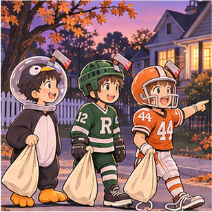
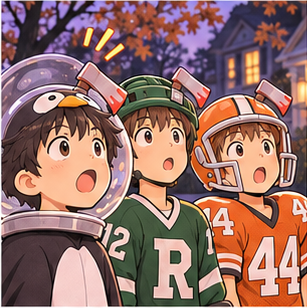
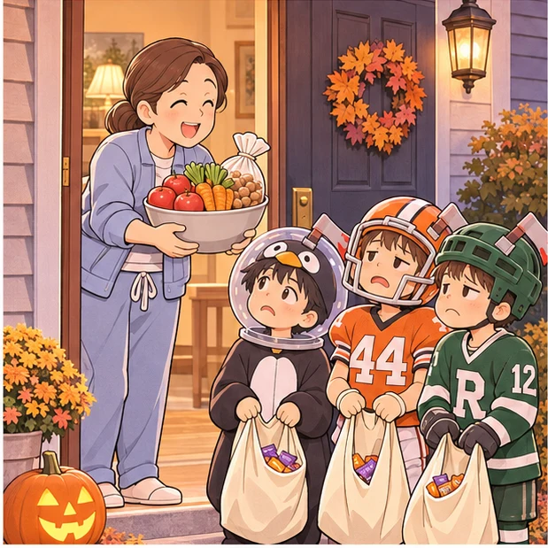
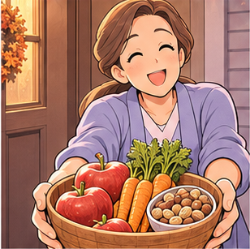

Chapter 6. Giant Bananas and Two-headed Astronauts - Part 2 of 3
"From ," I added."You can each have a piece of candy," the lady said, holding a out for us."Can we take two?" I asked, a Milky Way.
"Well, okay . . .""Can we take four?" I asked, a Butterfinger. "No," the lady said, the .

That lady was mean. We went to the next house and got candy there. Then we went to the house and got candy there.

Before we went to the next house, each of us took a piece of candy out of our and ate it. There's no reason you have to wait until the end of trick-or-treating to start eating your candy. You need to start eating your candy right away, so you'll have enough to get *more* candy.

That's the first rule of being a kid.Michael us a few away to the next house on his map. He rang the , and the thing in the history of the world happened.

A lady answered! Well, that wasn't the weird part, because ladies answer doors all the time. The weird part was *who* the lady was.

She wasn't a person. She was Mrs. Cooney, our school !It was weird.

I thought Mrs. Cooney lived in the 's office. But she lives in a house just like a person."!" we shouted.

"Ooh, I'm scared," Mrs. Cooney said, even though she totally didn't look scared at all. Mrs. Cooney brought out a bowl filled with apples, , and . Apples, , and ?

Who gives out apples, , and for Halloween? That's !"You can each take one," Mrs. Cooney said.

"Uh, do we have to?" I asked."Don't you have any candy?" asked Michael."Candy isn't good for you," said Mrs. Cooney.

"It your teeth." "I'd rather have teeth than no candy," I said. But we each took a bag of anyway because that was the closest thing to candy, and we didn't want to .

She doesn't know the first thing about Halloween. You're not supposed to give out healthy food!Mrs. Cooney is .